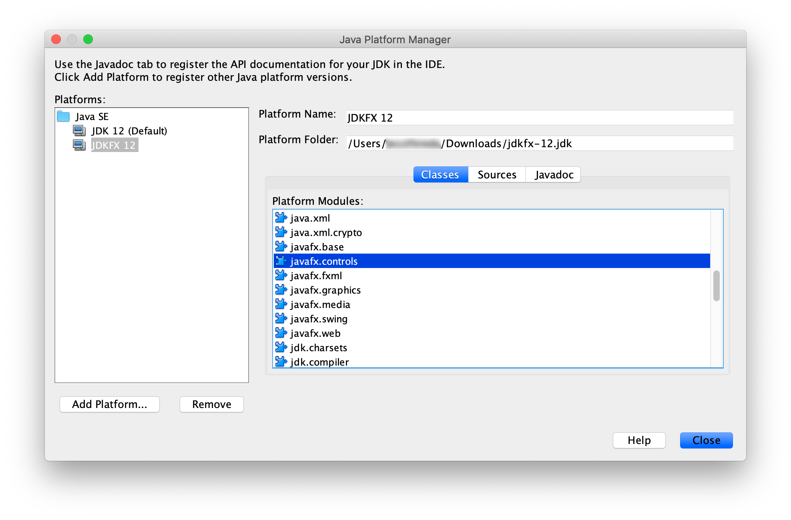
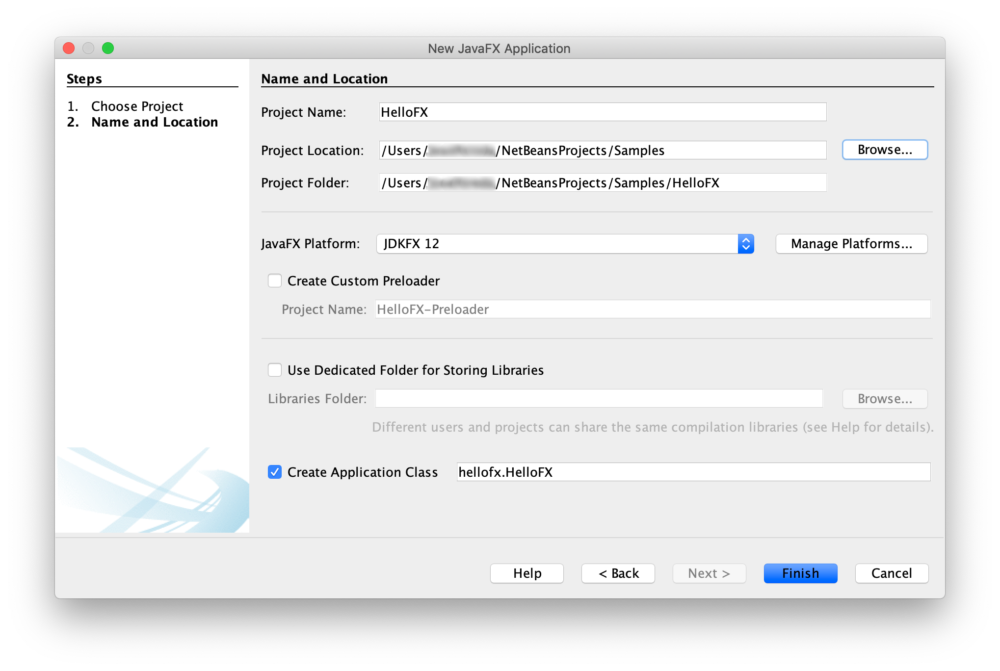
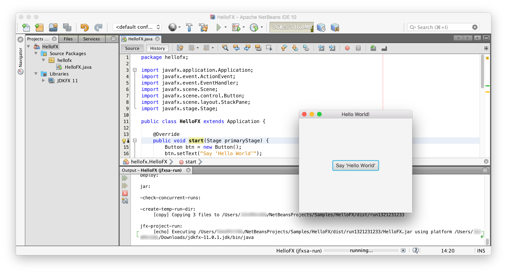

A runtime image of your JavaFX project is a custom JRE that contains only the platform modules that are required for your application.
If you want to create a runtime image of your JavaFX project follow these instructions.
Download an appropriate JavaFX runtime and JavaFX jmods for your operating system and unzip them to a desired location.
Add these environment variables pointing to the lib directory of the runtime and to the jmods directory:
export PATH_TO_FX=path/to/javafx-sdk-12/lib
export PATH_TO_FX_MODS=path/to/javafx-jmods-11
set PATH_TO_FX="path\to\javafx-sdk-12\lib"
set PATH_TO_FX_MODS="path\to\javafx-jmods-11"
You can run or create a runtime image of your JavaFX project from command line. A simple example can be found in this project.
The application has a single class HelloFX.java with its module-info file that defines the hellofx module. Compile it either using the JavaFX SDK:
javac --module-path $PATH_TO_FX -d mods/hellofx $(find src/ -name "*.java")
dir /s /b src\*.java > sources.txt & javac --module-path %PATH_TO_FX% -d mods/hellofx @sources.txt & del sources.txt
or using the JavaFX jmods:
javac --module-path $PATH_TO_FX_MODS -d mods/hellofx $(find src/ -name "*.java")
dir /s /b src\*.java > sources.txt & javac --module-path %PATH_TO_FX_MODS% -d mods/hellofx @sources.txt & del sources.txt
To run the modular application with the java command you need the JavaFX SDK modules and your module added to the module path:
java --module-path $PATH_TO_FX:mods -m hellofx/hellofx.HelloFX
java --module-path "%PATH_TO_FX%;mods" -m hellofx/hellofx.HelloFX
With a modular project, jlink can be used to create a custom runtime image using the JavaFX jmods:
$JAVA_HOME/bin/jlink --module-path $PATH_TO_FX_MODS:mods --add-modules hellofx --output hellofx
jlink --module-path "%PATH_TO_FX_MODS%;mods" --add-modules hellofx --output hellofx
And after the image is built, you can run it:
hellofx/bin/java -m hellofx/hellofx.HelloFX
hellofx\bin\java -m hellofx/hellofx.HelloFX
You can run or create a runtime of your JavaFX Maven project. A simple example can be found in this project.
The application has a main class MainApp.java with its module-info file that defines the hellofx module. It also uses FXML, and requires the javafx.fxml dependency added to the pom.xml.
It can be compiled and run on command line with javac, but using Maven we can simply do:
mvn clean javafx:run
To create a custom runtime, using the JavaFX Maven plugin, you can do:
mvn clean javafx:jlink
Note the plugin allows the usual options as the jlink command, as well as creating a launcher or a zip with the custom image.
And after the image is built, you can run it from command line:
target/hellofx/bin/launcher
target\hellofx\bin\launcher
You can run or create a runtime of your JavaFX Gradle project. A simple example can be found in this project.
The application has a main class HelloFX.java with its module-info file that defines the hellofx module, and the required build.gradle file.
It can be compiled and run on command line with javac, but using Gradle we can simply do:
./gradlew run
gradlew run
To create a custom runtime the referred steps can be used to generate a gradle task. Alternatively, there is a plugin that does it for us: the org.beryx.jlink. It can be combined with the JavaFX Gradle plugin:
plugins {
id 'application'
id 'org.openjfx.javafxplugin' version '0.0.7'
id 'org.beryx.jlink' version '2.9.4'
}
javafx {
version = "12"
modules = [ 'javafx.controls' ]
}
jlink {
launcher {
name = 'hellofx'
}
}
to generate and run the custom image:
./gradlew jlink
build/image/bin/hellofx
gradlew jlink
build\image\bin\hellofx
You can use jlink to create a runtime image that includes some or all the JavaFX modules, without being attached to a given project.
With this image you will be able to run JavaFX modular or non-modular projects, use it as a new JRE from your IDE to create regular JavaFX projects, or even use its jlink command to create a new custom image for your project.
For instance, you can create an image that contains the java.se module and the JavaFX modules, by running:
export PATH_TO_FX_MODS=path/to/javafx-jmods-11
$JAVA_HOME/bin/jlink --module-path $PATH_TO_FX_MODS \
--add-modules java.se,javafx.fxml,javafx.web,javafx.media,javafx.swing \
--bind-services --output /path/to/jdkfx-11.jdk
set PATH_TO_FX_MODS="path\to\javafx-jmods-11"
%JAVA_HOME%\bin\jlink --module-path %PATH_TO_FX_MODS% \
--add-modules java.se,javafx.fxml,javafx.web,javafx.media,javafx.swing \
--bind-services --output \path\to\jdkfx-11
With this custom image, you can set a new JAVA_HOME:
export JAVA_HOME=/path/to/jdkfx-11.jdk
set JAVA_HOME="path\to\jdkfx-11"
Since the JavaFX modules are already part of the runtime, now you can run the HelloFX sample without the need of adding PATH_TO_FX anymore, like:
javac -d mods/hellofx $(find src/ -name "*.java")
java --module-path mods -m hellofx/hellofx.HelloFX
dir /s /b src\*.java > sources.txt & javac -d mods/hellofx @sources.txt & del sources.txt
java --module-path mods -m hellofx/hellofx.HelloFX
Or add the image to your IDE:  And start creating Java projects with JavaFX classes.  And run them without any additional option: 
Since Java 9, applications should be modular, and distributed with tools like jlink. However, if you have a non-modular JavaFX project or you can't use jlink because you have non-modular dependencies where the automatic module naming convention doesn't apply, you can still create a fat jar.
As explained here, in order to create a runnable jar with all the required JavaFX dependencies, you will need to use a launcher class that doesn't extend from Application.
If you develop your JavaFX applications using Maven, you don't have to download the JavaFX SDK. Just specify the modules and the versions you want in the pom.xml file, and the build system will download the required modules, including the native libraries for your platform.
A simple Maven example can be found in this project. The pom.xml file shows how to create a runnable fat jar for this hellofx project with the Maven shade plugin.
Run the plugin to create the fat jar:
mvn compile package
Run the application using:
java -jar shade/hellofx.jar
java -jar shade\hellofx.jar
You can create a cross-platform fat jar by adding the dependencies from the three platforms that require native libraries to your pom file, in this sample only the ones from javafx.graphics:
<dependencies>
...
<dependency>
<groupId>org.openjfx</groupId>
<artifactId>javafx-graphics</artifactId>
<version>12</version>
<classifier>win</classifier>
</dependency>
<dependency>
<groupId>org.openjfx</groupId>
<artifactId>javafx-graphics</artifactId>
<version>12</version>
<classifier>linux</classifier>
</dependency>
<dependency>
<groupId>org.openjfx</groupId>
<artifactId>javafx-graphics</artifactId>
<version>12</version>
<classifier>mac</classifier>
</dependency>
</dependencies>
If you develop your JavaFX applications using Gradle, you don't have to download the JavaFX SDK. Just specify the modules and the versions you want in the build.gradle file, and the build system will download the required modules, including the native libraries for your platform. However, for Gradle we need to find and specify the platform/OS as classifier.
A simple Gradle example can be found in this project. In order to create a runnable fat jar for this project with Gradle, modify the jar task in the build file to include the launcher class:
mainClassName = 'hellofx.HelloFX'
jar {
manifest {
attributes 'Main-Class': 'hellofx.Launcher'
}
from {
configurations.runtimeClasspath.collect { it.isDirectory() ? it : zipTree(it) }
}
}
Now run the task to create the fat jar and run it:
./gradlew jar
java -jar build/libs/hellofx.jar
gradlew.bat jar
java -jar build\libs\hellofx.jar
You can create a cross-platform fat jar by adding the dependencies from the three platforms that require native libraries to the build file, in this sample only the ones from javafx.graphics:
runtimeOnly "org.openjfx:javafx-graphics:$javafx.version:win"
runtimeOnly "org.openjfx:javafx-graphics:$javafx.version:linux"
runtimeOnly "org.openjfx:javafx-graphics:$javafx.version:mac"
Now run the jar task again to create the cross-platform fat jar.
Finally, you can also create a runnable fat jar for your JavaFX project on command line.
An example can be found in this project. Download the appropriate JavaFX SDK for your operating system and unzip it to a desired location.
Add an environment variable pointing to the lib directory of the runtime:
export PATH_TO_FX=/path/to/javafx-sdk-11/lib
set PATH_TO_FX="path\to\javafx-sdk-11\lib"
Compile the project:
javac --module-path $PATH_TO_FX --add-modules=javafx.controls -d out $(find src/main/java -name "*.java")
dir /s /b src\main\java\*.java > sources.txt & javac --module-path %PATH_TO_FX% --add-modules=javafx.controls -d out @sources.txt & del sources.txt
And create the fat jar, adding the JavaFX required jars and the platform-specific native libraries. For the hellofx project:
find $PATH_TO_FX/{javafx.base.jar,javafx.graphics.jar,javafx.controls.jar} -exec unzip -nq {} -d out \;
#uncomment for Linux:
#cp $PATH_TO_FX/{libprism*.so,libjavafx*.so,libglass*.so,libdecora_sse.so} out
#uncomment for Mac:
#cp $PATH_TO_FX/{libprism*.dylib,libjavafx*.dylib,libglass.dylib,libdecora_sse.dylib} out
rm out/META-INF/MANIFEST.MF out/module-info.class
mkdir libs
jar --create --file=libs/hellofx.jar --main-class=hellofx.Launcher -C out .
cd out & jar xf "%PATH_TO_FX%\javafx.base.jar" & jar xf "%PATH_TO_FX%\javafx.graphics.jar" & jar xf "%PATH_TO_FX%\javafx.controls.jar" & cd ..
copy "%PATH_TO_FX%\..\bin\prism*.dll" out & copy "%PATH_TO_FX%\..\bin\javafx*.dll" out & copy "%PATH_TO_FX%\..\bin\glass.dll" out && copy "%PATH_TO_FX%\..\bin\decora_sse.dll" out
del out\META-INF\MANIFEST.MF & del out\module-info.class
mkdir libs
jar --create --file=libs/hellofx.jar --main-class=hellofx.Launcher -C out .
And after the jar is built, you can run it:
java -jar libs/hellofx.jar
java -jar libs\hellofx.jar